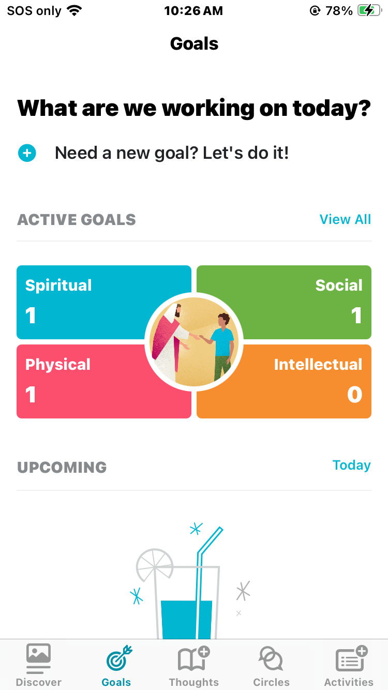
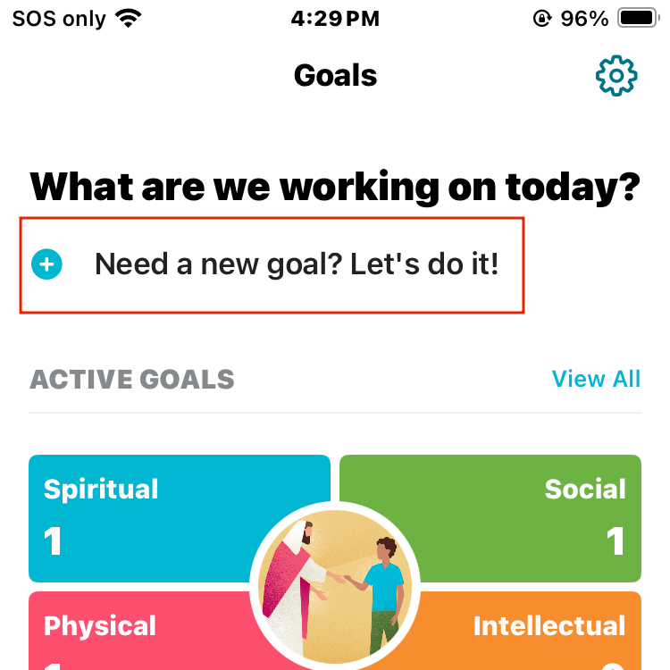
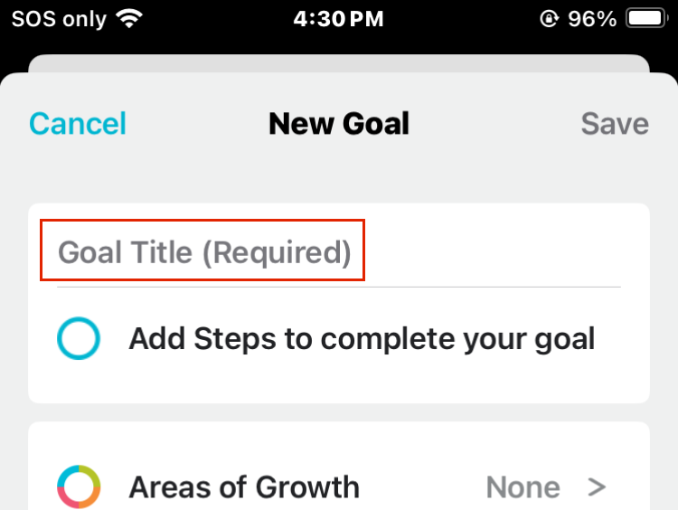
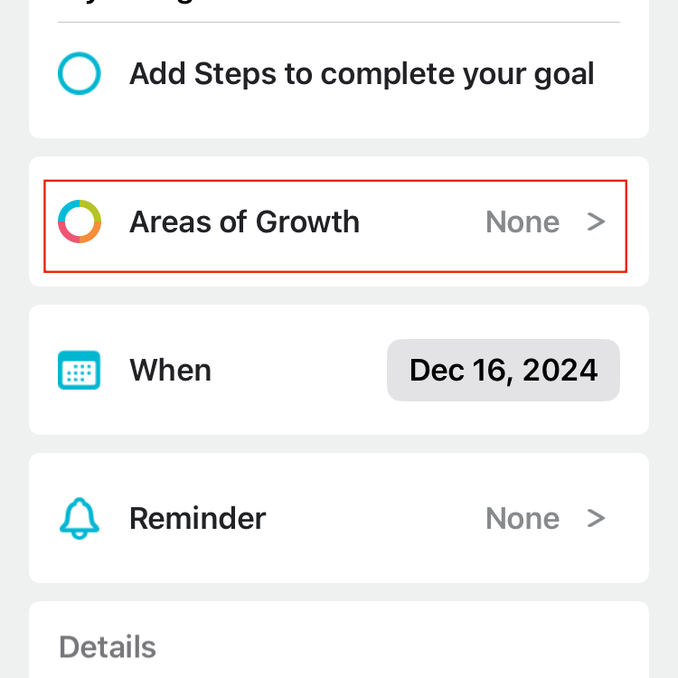
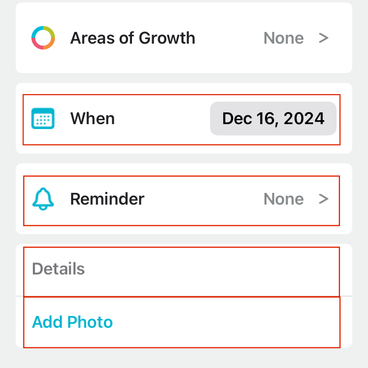
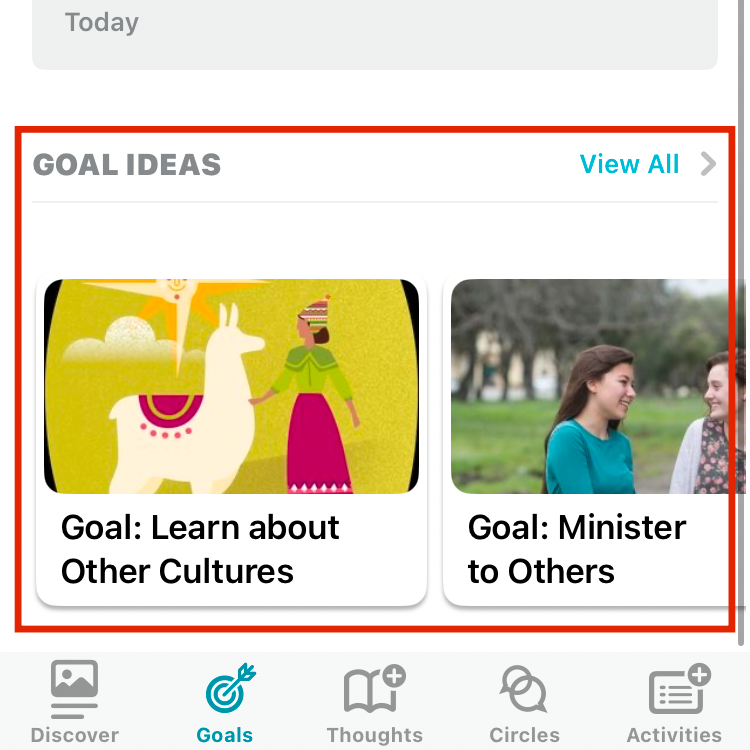

The Goals section gives users a place to make new goals, keep track of current goals, and find new goal ideas. They are organized into four categories, Spiritual, Social, Physical and Intellectual to encourage users to set goals in more than one area of life.
Setting new goals
- Select Need a new goal? Let's do it next to the plus icon near the top of the screen. 
- Give your goal a title in the Goal title bar. 
- Optionally, add steps to break your goal down and make it easier to achieve.
- Add one or more Area of Growth by tapping the Area of Growth bar. 
- You may also add details like reminders, time frame, notes, and a photo in the sections below. 
- Remember to save your goal by selecting Save in the top right corner.
*Tip: Certain articles in the Discover page allow you to make goals relating to that article. See the Discover page for more information.
Active goals
The Active Goals section is where you can check on goals you've set.
Select one of the Areas of growth or view all to see your active goals.
Upcoming
The Upcoming section is where you can see any upcoming reminders or time frames you have previously set in any of your goals.
Select one to check in on progress, mark complete, edit or delete it.
Goal Ideas
The Goal Ideas section is where you can find inspiration and ideas for setting your next goal. Select View all to see more ideas.
